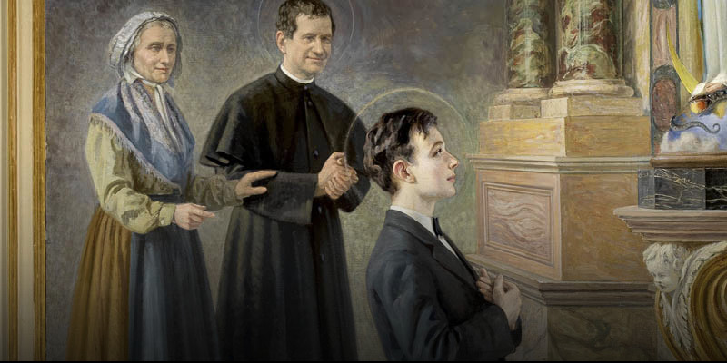
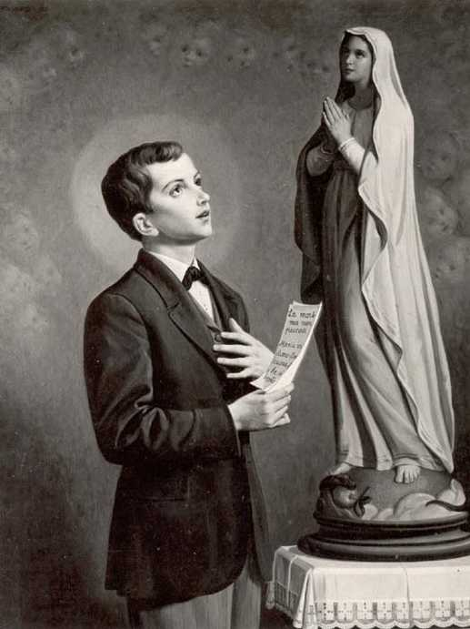

Inspiráló életpélda.
Ahol a hit és a tanítás egybefonódik.

Savio Szent Domonkos fiatalon is példát mutatott kitartásból, hitből és segítőkészségből. Már gyermekkorában is fontosnak tartotta a közösséghez való tartozást, a barátok és társaik támogatását, valamint a tanulást. Élete során folyamatosan arra törekedett, hogy jó példát mutasson másoknak, és segítsen a körülötte élőknek fejlődni, miközben mindig hű maradt hitéhez és értékeihez.
